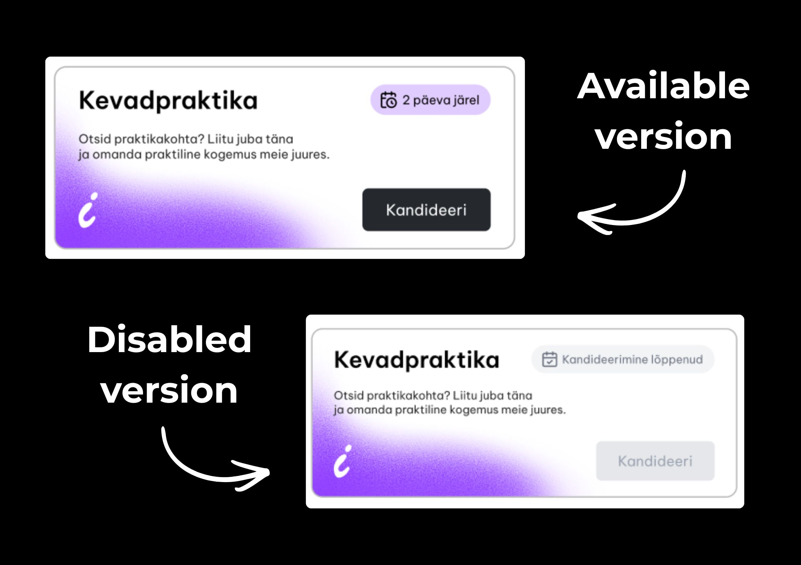

Internkit website design + brand
InternKit is a web platform where small businesses can streamline and automate their hiring workflow. The platform focuses on automating simple hiring processes such as resume review, interview scheduling and technical assessment. It also provides the business better outreach opportunities such as our internal network and connecting the external application links directly to the business' pipeline. This is the next step in elevating the baseline for fair and effective hiring.
Project Type
Website and platform concept design
Overview
This project is a collaborative effort with a team of three student developers, where I focus on visual concept design, branding, and UX/UI design. The goal is to create a cohesive visual identity and a user-focused platform, providing InternKit with a foundation for launch.
Problem
InternKit had no established visual identity, which made it difficult to build their platform off of. Clearer visuals, logo design, and consistent brand colors were necessary to give them a more professional foundation.
My role
Visual concept design + UX/UI design
What I did
- Brand identity and visual concept development
- Logo design
- UI design
- UX principles implementation
Internkit website visual
I chose a dark interface with gradient accents to create a modern, tech-focused feel, while also aligning with the habits of software developers who are used to working in dark mode interfaces.

Logo
The logo was designed putting the main focus on the brand's core users - interns. The little i represents the innovation and inspiration for the interns to easily find information about different internships. I chose the purple to highlight an intuitive movement around the website and main platform.

Embedded advertisements for interns
Since the platform is still being developed, a new feature has been added that shows ads for interns to help them find and apply for internships more easily. In terms of design, I took into account appropriate line spacing and layout according to UX principles - I prioritized those elements that described the main value of the component and designed the secondary ones accordingly.
Internkit platform - dark and light mode
The platform itself has two main modes users can choose from: light mode and dark mode. Having both modes allows the platform to accommodate more users and enhances overall accessibility.
Reflection
The InternKit platform and website are currently in development and have not been launched yet. I remain actively involved in the design process, producing visual concepts and UX/UI designs that the development team will use to shape the final platform.
The ongoing process of this project has strengthened my skills in:
- Collaborating with developers
- Developing visual insight to understand what works best for users
- Explaining and justifying visual hierarchy to developers